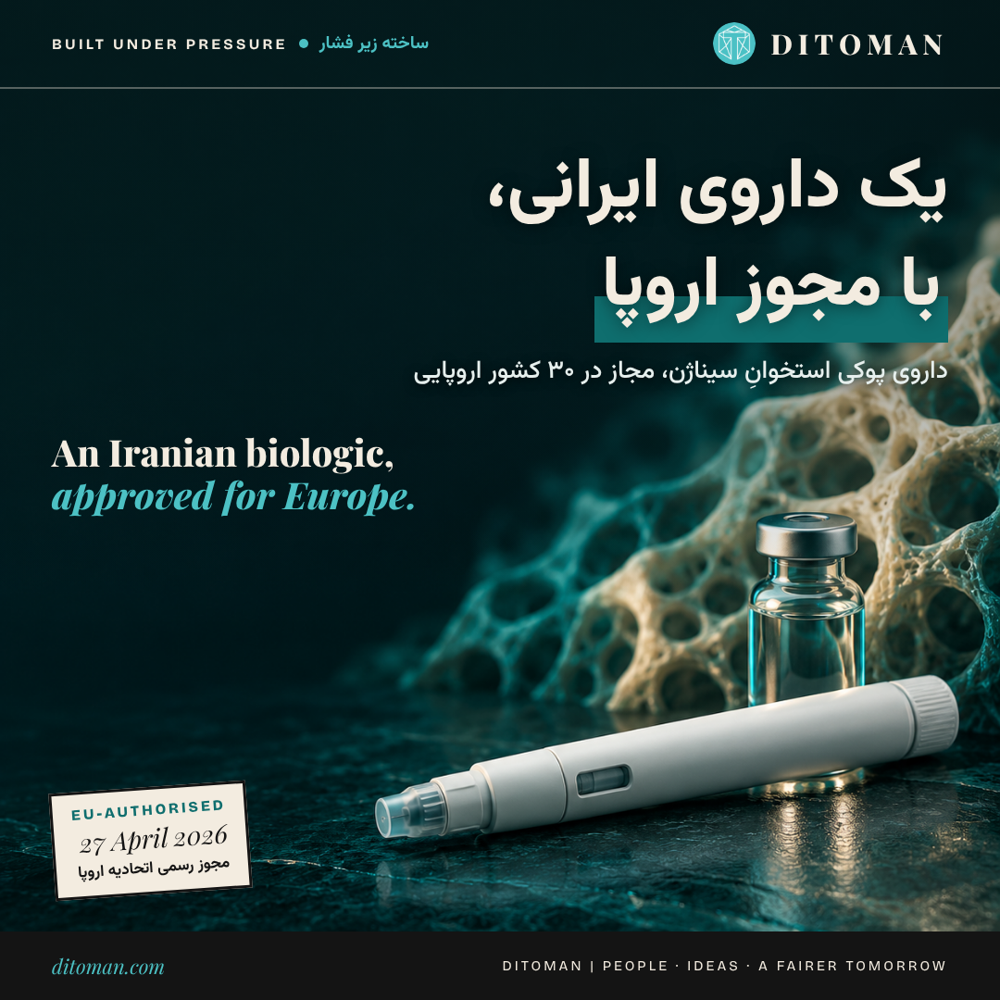

An Iranian Medicine, Authorised Across Europe
CinnaGen's Zandoriah, a biosimilar for osteoporosis, received EU marketing authorisation in April 2026. The company behind it, the drug itself, what the approval covers, and what the numbers do and do not show.
در آوریل ۲۰۲۶، کمیسیون اروپا به داروی «زاندوریا» ساخت شرکت ایرانی سیناژن مجوز بازار داد. این اولین مجوز اروپایی این شرکت است. در این صفحه داستان کامل را میخوانید: شرکت، دارو، مجوز، و اینکه اعداد واقعاً چه میگویند و چه نمیگویند.
۰۱. سیناژن کیست؟
سیناژن در سال ۱۹۹۴ (۱۳۷۳) تأسیس شد و از پیشگامان داروسازی زیستی (بیوتکنولوژی) در ایران است. امروز «گروه سیناژن» از هشت شرکت تشکیل شده است.
- ۱۹۹۴ تأسیس سیناژن
- ۲۰۰۶ اولین داروی بیوسیمیلار شرکت، با همکاری مؤسسه فراونهوفر آلمان: «سینووکس»، اینترفرون بتا برای اماس، که در ۲۰۰۷ مجوز سازمان غذا و دارو گرفت
- ۲۰۱۶ عرضه «سینورا» (آدالیموماب)، داروی بیماریهای خودایمنی
- ۲۰۱۸ دریافت گواهی GMP اروپایی برای کارخانه
- ۲۰۲۱ عرضه «زاکرل» (اوکرلیزوماب) برای اماس
- ۲۰۲۶ تأیید کمیته علمی آژانس دارویی اروپا در فوریه، و مجوز رسمی بازار اتحادیه اروپا برای زاندوریا در آوریل
طبق گفته خود شرکت، بیش از ۱۹ داروی بیوسیمیلار در بازار و بیش از ۲۵ دارو در دست توسعه دارد و ظرفیت بیوراکتورهایش از ۵۰ هزار لیتر بیشتر است.
۰۲. زاندوریا چیست و چه میکند؟
ماده مؤثر زاندوریا «تریپاراتاید» است: بخش فعال هورمون پاراتیروئید انسان. بیشتر داروهای پوکی استخوان فقط سرعت تحلیل استخوان را کم میکنند. تریپاراتاید فرق دارد و ساختن استخوان تازه را تحریک میکند. به همین دلیل برای بیمارانی تجویز میشود که در معرض خطر بالای شکستگیاند.
زاندوریا «بیوسیمیلار» داروی Forsteo شرکت آمریکایی الی لیلی است. بیوسیمیلار یعنی نسخه همارز یک داروی زیستی، با کیفیت، ایمنی و اثربخشی قابلمقایسه. داروهای زیستی در سلولهای زنده تولید میشوند، نه با واکنش شیمیایی ساده، و همین تولیدشان را از سختترین کارهای صنعت دارو میکند.
دارو به شکل قلم تزریقی آماده (۲۰ میکروگرم) است و روزانه زیر پوست تزریق میشود.
۰۳. این دارو چقدر به بیماران کمک میکند؟
در کارآزمایی اصلی تریپاراتاید که در ۲۰۰۱ در مجله پزشکی نیوانگلند منتشر شد، ۱۶۳۷ زن یائسه مبتلا به پوکی استخوان شرکت کردند. با دوز ۲۰ میکروگرم، یعنی همان دوز زاندوریا:
- شکستگی تازه ستون فقرات ۶۵٪ کمتر شد (۵٪ در برابر ۱۴٪ در گروه دارونما)
- شکستگیهای دیگر ناشی از شکنندگی استخوان ۵۳٪ کمتر شد (۳٪ در برابر ۶٪)
شکستگی لگن و ستون فقرات در سالمندان فقط درد نیست: اغلب به ازکارافتادگی و از دست دادن استقلال منجر میشود. هر شکستگیای که پیشگیری شود، یعنی سالهایی که یک نفر میتواند روی پای خودش بایستد.
۰۴. مجوز اروپا یعنی چه؟
این مجوز «متمرکز» است: یک تأیید که برای هر ۲۷ کشور اتحادیه اروپا بهاضافه ایسلند، نروژ و لیختناشتاین معتبر است. یعنی ۳۰ کشور.
- ۲۶ فوریه ۲۰۲۶: کمیته علمی آژانس دارویی اروپا (CHMP) نظر مثبت داد
- ۲۷ آوریل ۲۰۲۶: مجوز رسمی بازار صادر شد (طبق سایت آژانس دارویی اروپا)
- زاندوریا پنجمین بیوسیمیلار تریپاراتاید در اروپاست و با محصولات شرکتهای اروپایی و هندی رقابت میکند
- دارنده مجوز، شعبه پرتغالی سیناژن است که در فونشال، جزیره مادیرا، ثبت شده
یک نکته مهم: مجوز به معنای فروش فوری نیست. هر کشور هنوز روند قیمتگذاری، پوشش بیمه و عرضه خودش را دارد. پس فروش واقعی در اروپا تازه باید شروع شود.
۰۵. اروپا چقدر به این دارو نیاز دارد؟
- حدود ۴.۳ میلیون شکستگی ناشی از پوکی استخوان در سال ۲۰۱۹ (اتحادیه اروپا، بریتانیا و سوئیس)
- بیش از ۵۶ میلیارد یورو هزینه درمانی سالانه
- حدود ۷۱٪ از زنانی که باید درمان شوند، درمانی دریافت نمیکنند
بیوسیمیلارها با ایجاد رقابت معمولاً قیمت را پایین میآورند و دسترسی را بیشتر میکنند. شکاف درمانی به این بزرگی دقیقاً جایی است که یک گزینه تازه میتواند اثر بگذارد.
۰۶. سیناژن کجاها فعال است؟
سیناژن میگوید در بیش از ۴۰ کشور در اوراسیا، خاورمیانه، آمریکای لاتین و آفریقا فعالیت تجاری دارد. فهرستی که شرکت در ۲۰۱۹ منتشر کرد، کشورهایی مثل الجزایر، مراکش، سنگال، اردن، قطر، هند، سریلانکا، ویتنام، صربستان، بوسنی، مولداوی و اکوادور را شامل میشد. سیناژن در ترکیه هم کارخانه دارد.
شرکت آمار بیماران برخی داروهایش را هم منتشر کرده: حدود ۸۰ هزار بیمار از زمان عرضه «سینورا» از آن استفاده کردهاند، و «زاکرل» حدود ۵۴۰۰ بیمار در ایران و ۷۲۰۰ بیمار در منطقه را درمان کرده است. اینها برآورد خود شرکتاند و منبع مستقلی تأییدشان نکرده.
۰۷. زنی که سکان را در دست دارد
دکتر هاله حامدیفر از سال ۲۰۰۲ در سیناژن کار کرده و از ۲۰۲۳ رئیس هیئتمدیره گروه است. اولین مجوز اروپایی شرکت در دوره ریاست او به دست آمد. فوربس خاورمیانه او را در فهرست رهبران برتر حوزه سلامت ۲۰۲۵، رتبه ۹ قرار داده است. مدیرعامل سیناژن مهران منتجبینیت است.
درباره درآمد ارزی و صرفهجویی
دنبال این اعداد هم گشتیم: سیناژن چقدر صادرات دارد، چقدر ارز برای ایران میآورد و تولید داخلی این داروها چقدر در واردات صرفهجویی کرده. رقمهایی در رسانهها دستبهدست میشود، ولی هیچکدام را با منبع اصلی و قابلبررسی پیدا نکردیم. ترجیح دادیم عددی را که نمیتوانیم ثابت کنیم منتشر نکنیم. اگر سیناژن یا منبع رسمی آمار تأییدشدهای منتشر کند، این بخش را بهروز میکنیم.
جمعبندی: گرفتن مجوز اروپا برای یک داروی زیستی یعنی رسیدن به استانداردی که در هر جای دنیا پذیرفته میشود. این دستاورد را صدها دانشمند، مهندس و کارگر ساختهاند، در شرایطی که دسترسی به مواد، تجهیزات و نظام مالی جهانی ساده نبوده است.
In April 2026, the European Commission granted marketing authorisation to Zandoriah, a medicine made by the Iranian company CinnaGen. It is the company's first EU authorisation. This page tells the full story: the company, the drug, the approval, and what the numbers do and do not show.
01. Who is CinnaGen?
CinnaGen was founded in 1994 and is one of the pioneers of biopharmaceuticals in Iran. The CinnaGen Group today is made up of eight companies.
- 1994 CinnaGen founded
- 2006 First biosimilar, developed with Germany's Fraunhofer Institute: Cinnovex, an interferon beta for multiple sclerosis, approved by Iran's FDA in 2007
- 2016 Launch of CinnoRA (adalimumab) for autoimmune diseases
- 2018 EU GMP certification for its plant
- 2021 Launch of Xacrel (ocrelizumab) for multiple sclerosis
- 2026 Positive opinion from the EMA's scientific committee in February, EU marketing authorisation for Zandoriah in April
By the company's own account, it has more than 19 biosimilars on the market, more than 25 in development, and over 50,000 litres of bioreactor capacity.
02. What Zandoriah is and does
Zandoriah's active ingredient is teriparatide, the active fragment of human parathyroid hormone. Most osteoporosis medicines slow the loss of bone. Teriparatide is different: it stimulates new bone formation, which is why it is used for patients at high risk of fracture.
Zandoriah is a biosimilar of Forsteo, made by Eli Lilly. A biosimilar is an equivalent version of a biological medicine, with comparable quality, safety and efficacy. Biologics are produced in living cells rather than by simple chemistry, which makes them among the hardest products in the pharmaceutical industry to make.
It comes as a pre-filled 20-microgram pen, injected under the skin once a day.
03. How much does it help patients?
In teriparatide's pivotal trial, published in the New England Journal of Medicine in 2001, 1,637 postmenopausal women with osteoporosis took part. At the 20-microgram dose, the same dose as Zandoriah:
- New spine fractures fell by 65% (5% versus 14% on placebo)
- Other fragility fractures fell by 53% (3% versus 6%)
For older people, a hip or spine fracture is not just pain. It often means disability and lost independence. Every fracture prevented is years in which someone can stand on their own feet.
04. What the EU approval means
This is a centralised authorisation: one approval valid in all 27 EU member states plus Iceland, Norway and Liechtenstein, 30 countries in total.
- 26 February 2026: positive opinion from the EMA's scientific committee (CHMP)
- 27 April 2026: marketing authorisation granted (per the EMA's website)
- Zandoriah is the fifth teriparatide biosimilar in the EU, competing with products from European and Indian companies
- The licence holder is CinnaGen's Portuguese subsidiary, registered in Funchal, Madeira
One important point: authorisation is not the same as sales. Each country still has its own pricing, reimbursement and launch process, so real sales in Europe are only now beginning.
05. How much does Europe need it?
- About 4.3 million osteoporotic fragility fractures in 2019 (EU, UK and Switzerland)
- More than €56 billion in annual healthcare costs
- About 71% of women who qualify for treatment do not receive it
Biosimilars usually bring prices down through competition and widen access. A treatment gap this large is exactly where a new option can make a difference.
06. Where CinnaGen operates
CinnaGen says it has commercial operations in more than 40 countries across Eurasia, the Middle East, Latin America and Africa. A list the company published in 2019 included Algeria, Morocco, Senegal, Jordan, Qatar, India, Sri Lanka, Vietnam, Serbia, Bosnia and Herzegovina, Moldova and Ecuador. It also has a plant in Turkey.
The company has also published patient figures for some products: about 80,000 patients have used CinnoRA since launch, and Xacrel has treated about 5,400 patients in Iran and 7,200 across the region. These are company estimates, not independently verified.
07. The woman at the helm
Dr Haleh Hamedifar has worked at CinnaGen since 2002 and has chaired the group since 2023. The company's first EU authorisation came under her chairmanship. Forbes Middle East ranked her ninth among its Top Healthcare Leaders of 2025. CinnaGen's CEO is Mehran Montajabi Niyat.
On export earnings and savings
We also looked for how much CinnaGen exports, how much foreign currency it brings into Iran, and how much local production of these medicines has saved on imports. Figures circulate in the media, but we could not trace any of them to a primary, checkable source. We would rather not publish a number we cannot stand behind. If CinnaGen or an official source publishes verified figures, we will update this section.
The takeaway: winning EU approval for a biological medicine means meeting a standard recognised anywhere in the world. Hundreds of scientists, engineers and workers built this, at a time when access to materials, equipment and the global financial system has not been simple.
Sources • منابع
- European Medicines Agency: Zandoriah EPAR
- GaBI Online: EMA recommends approval for Zandoriah
- pharmaphorum: What the EU authorisation means for osteoporosis
- GaBI Journal (2024, company-funded): CinnaGen's biosimilars development
- Global Business Reports (2019): CinnaGen company profile
- Forbes Middle East: Haleh Hamedifar
- Neer et al., NEJM 2001: teriparatide fracture trial
- Wikipedia: CinnaGen
Built Under Pressure
A Ditoman series documenting what Iranian people and businesses have built, with sources, and without taking political sides.
مجموعهای از دیتومن برای ثبت دستاوردهای واقعی مردم و کسبوکارهای ایرانی، با منبع و بدون موضع سیاسی.